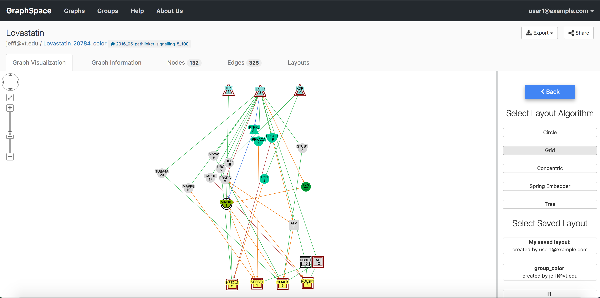

7. Interacting with Graphs¶
GraphSpace is designed to provide access to following commonly used features:
- Searching within a graph
- Exporting a graph
- Changing the graph layout
- Filtering nodes and edges
- Setting default layout
7.1. Search¶
This feature provides a search bar that allows the user to find nodes/edges that match search terms. See Search Query Semantics section for more information on query semantics. The matching nodes or edges are highlighted automatically as you type in the query in the search bar.

7.2. Export¶
GraphSpace allows users to export a graph in the following formats:
- Network Graphics (.png) - Export the current graph view as a PNG image.
- Network Graphics (.jpg) - Export the current graph view as a JPEG image.
- Network Data (.png) - Export the graph in CYJS format.
- Network Graphics (.png) - Export the graph stylesheet in Stylesheet JSON format.
GraphSpace does not support any other export formats since it relies on Cytoscape.js for this functionality, which implements only export to PNG, JPG and JSON format.

7.3. Change Layout¶
GraphSpace](http://www.graphspace.org) allows users to change layout using the following steps:
- Click on the
Change Layoutbutton to view available layout options. - The
Change Layoutpanel provides two alternatives: - Select Layout Algorithm - List of layout algorithms supported by GraphSpace through its use of Cytoscape.js. - Select Saved Layout - List of layout saved by the user using GraphSpace. The user has created them in earlier sessions by manually modifying the positions of nodes and edges created by some automatic layout algorithm and saving the layout. - Click on a layout option to change the current layout.

7.4. Filter nodes and edges¶
Graph algorithms may output networks where nodes and edges can be ranked, e.g., by path index or by weight/score. GraphSpace allows each node and edge to have an integer-valued data-attribute called k that specifies the rank of the node or the edge. For any network that contains this attribute (and only for such networks), GraphSpace displays the “Filter nodes and edges” panel with a Current rank slider. Changing the value in the Current rank slider hides all nodes and edges whose k values are less than or equal to the value in the slider. The possible values in this slider range from 1 to the maximum value of k in the graph. This interface element allows the user to unveil the network gradually in real time and gain intuition about how the network expands or contracts as this threshold changes.
The images below shows a user stepping through a graph using this slider. For example in the following graph, changing the value from 3 to 4 revealed the green node and the edges connecting it to the blue node and yellow node.
Current Rank is 3 | Current Rank is 4
:————————-:|:————————-:
 |
| 
7.5. Default Layout¶
Default layout is the layout which is used by default, whenever a user visits the page for a graph. A layout can be set as a default layout for a graph only if it is shared with other users who have access to the graph. Default layout for a graph can only be set by the owner of the graph.
If a layout is shared with other users who have access to the graph, user can click on the Set as Default Layout button to set the layout as the default layout for the graph.
If a layout is set as default layout, user can click on the Remove as Default Layout button to unset the layout as the default layout for the graph.